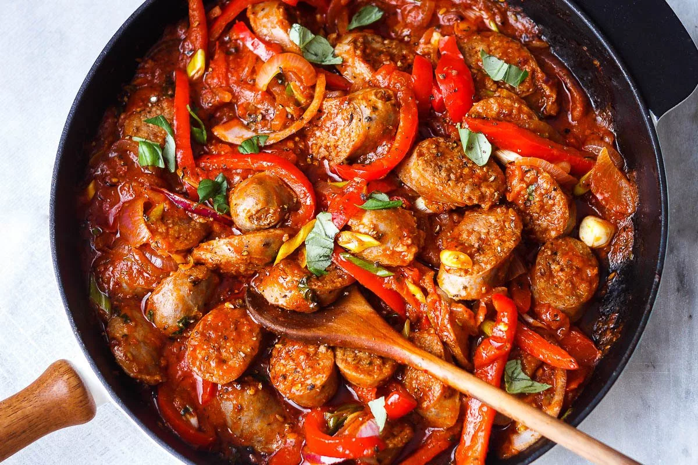

Sausage and Peppers recipe

How to make sausage and peppers
This is a quick and delicious meal to make on any occasion. Everything you
want in one pan.
This dish is perfect for begginers in the kitchen up to the chefs in
the family. Its satisfying and makes your house smell lovely, it will bring the whole
family in for a wonderful meal.
Ingredients to make Sausage and peppers
- Sausage (sweet or hot italian)
- Red sauce of your choice
- one sliced red onion
- two red, green, or yellow peppers
- salt, pepper, and Italian seasoning
cooking instructions
- Chop your onion and peppers and sautee on medium heat.
- Once suateed add your red sauce, sausage, and seasoning.
- Cover with lid, cook on medium heat for 30 minutes.
- Thats it! serve with a nice side salad or bread, and enjoy!